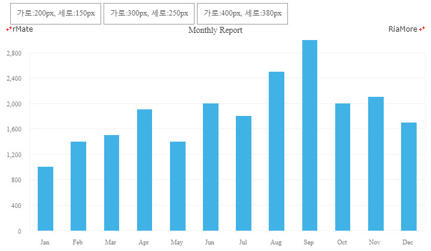

|
알메이트-차트 6.0 사용 설명서
|
알메이트 차트는 모바일 환경을 위한 반응형 웹 사이트에서도 효과적으로 활용될 수 있는 차팅 라이브러리입니다. 알메이트 차트를 이용해서 모바일 환경을 위한 차트를 작성할 때 모바일 환경을 위한 레이아웃을 별도로 작성하실 필요가 없습니다. 알메이트 차트에서는 차트를 위한 공간의 크기가 작아지면 작아진 공간에 맞추어 모든 차트의 구성 요소들의 크기가 자동으로 변경됩니다. 아래 예제 차트를 보면, 차트가 생성되는 <div> 의 크기는 3 가지로 다르지만 적용된 레이아웃은 모두 같은 레이아웃입니다.
See the CodePen 알메이트 차트 - 차트의 크기 재설정
-모바일 환경을 위한 반응형 웹 사이트에 적용될 차트를 만들 때 주의할 사항은 <div> 의 크기를 픽셀 값으로 지정하지 않고 퍼센트 값으로 지정하는 것입니다. 퍼센트 값으로 크기를 지정하면 <div> 의 컨테이너(아래 예제에서는 <body>)에 설정된 전체 크기를 차트를 위한 공간으로 활용할 수 있기 때문에 모바일 환경과 같이 제한된 크기의 화면에서도 최대한 큰 공간을 사용할 수 있고, 다양한 크기의 화면 해상도를 효울적으로 지원할 수 있기 때문입니다.
그리고 또 유의할 점은 차트 내에 표시되는 타이틀, 축 레이블, 데이터 레이블 등과 같은 텍스트입니다. 위 예제 차트에서 보는 바와 같이 차트가 생성되는 공간의 크기가 변경되면 축 레이블의 개수는 자동으로 변경되지만 폰트 크기는 변경되지 않습니다. 따라서 반응형 웹 사이트에 적용될 차트를 생성할 때는 차트에 표시되는 텍스트의 수와 폰트 크기를 고려해서 디자인해야 합니다. 차트의 디자인은 차트 디자인과 스타일링을 참조하십시요.
모바일 장비의 크기가 작아서 차트가 화면의 거의 전체 크기를 차지하는 경우가 있습니다.
이 때는 사용자가 손가락으로 화면을 스크롤하려고 해도 차트에서 먼저 이벤트를 사용해버리기 때문에 스크롤을 하기 어렵게 됩니다.
이 경우에는 차트 노드(예, <Column2DChart>)의 touchMoveEnable 속성을